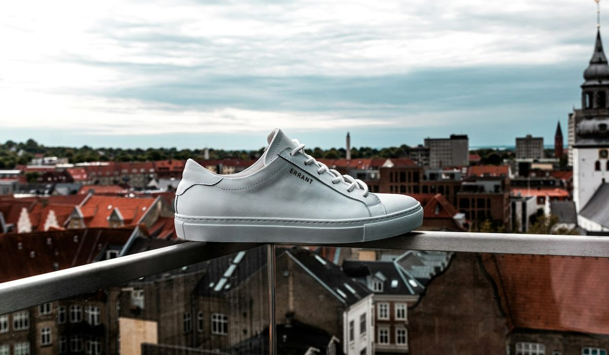

En bref
Les meilleures baskets blanches pour femme en 2026 sont les Veja V-10 en cuir, notées 8,4/10 (relevé de démonstration), pour leur semelle en caoutchouc durable et un prix contenu autour de 155 €. La Adidas Stan Smith suit à 8,1/10, l'iconique la plus accessible à 110 €. La New Balance 550 complète le podium à 7,9/10 avec le meilleur amorti des modèles de ville.
- Sept modèles comparés, de 89 € pour la Superga 2750 à 495 € pour la Golden Goose Super-Star, soit un écart de 1 à 5,6
- Veja fabrique ses baskets au Brésil et au Portugal depuis 2005, avec du caoutchouc et du coton dans la composition
- La New Balance 550 est la plus confortable du panel sur une journée de marche, la Superga 2750 la plus abordable
- Cinq modèles sur sept coûtent moins de 160 €, et deux d'entre eux, la V-10 et l'Air Force 1, associent tige en cuir et semelle cousue
Sommaire de ce comparatif
Nos critères et leur poids
Une basket blanche se porte quatre jours sur sept, avec un jean, une robe en maille ou un tailleur pantalon. On lui demande donc d'abord de tenir la marche, puis de vieillir proprement. Le style compte, le prix aussi, mais une paire belle qui fait mal au troisième kilomètre finit au fond du placard.
| Critère | Poids | Ce que nous regardons |
|---|---|---|
| Confort | 25 % | Amorti, maintien du talon, largeur de l'avant pied, sensation après six heures de marche |
| Cuir et construction | 25 % | Nature du cuir, doublure, coutures, finition des bords et du contrefort |
| Durabilité de la semelle | 20 % | Gomme, montage cousu ou collé, usure du talon après plusieurs mois |
| Style | 15 % | Ligne, polyvalence de la silhouette, blanc qui reste net |
| Prix | 15 % | Prix public en France, rapport entre prix et durée de vie attendue |
La note globale est la moyenne pondérée des cinq sous-notes, arrondie au dixième.
Ce poids explique deux résultats qui peuvent surprendre. Le modèle le plus cher ferme la marche, parce qu'il ne gagne ni sur le confort ni sur la semelle ce qu'il coûte en plus. Le moins cher, la Superga, se classe juste devant, pénalisé par un maintien plus léger. Et la Stan Smith, sans être la plus confortable, monte sur le podium grâce à son prix.
Le classement des baskets blanches
01 Le meilleur équilibre155 €, semelle caoutchouc cousue8,4/10
Le meilleur équilibre155 €, semelle caoutchouc cousue8,4/10
Le meilleur équilibre155 €, semelle caoutchouc cousue8,4/1002 L'icône accessible110 €, ligne la plus épurée8,1/10
L'icône accessible110 €, ligne la plus épurée8,1/10
L'icône accessible110 €, ligne la plus épurée8,1/1003Le plus confortable135 €, amorti de basket7,9/10
La Veja V-10 prend la première place parce qu'elle ne perd sur aucun critère. Son cuir lisse se patine sans craqueler, sa semelle en caoutchouc est cousue sur le pourtour et le prix reste autour de 155 €. La marque fabrique au Brésil et au Portugal depuis 2005 et met en avant le caoutchouc et le coton de ses compositions, un argument que beaucoup de lectrices prennent en compte au moment de choisir.
La Adidas Stan Smith est deuxième pour une raison simple, elle coûte 110 €, et sa ligne n'a presque pas bougé depuis des décennies. Son amorti est plus ferme que celui de la V-10, et la version standard utilise un matériau synthétique qui imite le cuir, ce qui joue sur la note de construction.
La New Balance 550 ferme le podium. C'est un ancien modèle de basket ball réédité, plus haut de semelle, plus rembourré au col. Sur une journée de marche en ville, c'est la paire qui fatigue le moins. Sa silhouette plus sportive se marie moins facilement avec une robe longue ou un pantalon de tailleur.
Le tableau comparatif des 7 modèles
Chaque ligne correspond à un modèle blanc en cuir, au prix public constaté en France. Les sous-notes détaillées par critère figurent plus bas.
| Marque et modèle | Note /10 | Prix | Tige | Semelle | Le point fort |
|---|---|---|---|---|---|
| Veja, V-10 cuirNotre choix | 8,4 | 155 € | Cuir lisse | Caoutchouc, cousue | L'équilibre prix et durée |
| Adidas, Stan Smith | 8,1 | 110 € | Cuir synthétique ou cuir selon version | Caoutchouc, collée | L'icône intemporelle |
| New Balance, 550 | 7,9 | 135 € | Cuir et synthétique | Caoutchouc, collée | Le confort de marche |
| Nike, Air Force 1 '07 | 7,8 | 119,99 € | Cuir | Caoutchouc, cousue | L'amorti et la carrure |
| Autry, Medalist Low | 7,6 | 185 € | Cuir | Caoutchouc, collée | Le style vintage |
| Superga, 2750 Cotu Classic | 7,5 | 89 € | Toile ou cuir selon version | Caoutchouc, vulcanisée | Le prix le plus doux |
| Golden Goose, Super-Star | 7,1 | 495 € | Cuir nappa vieilli | Caoutchouc, collée | La signature visible |
Prix publics constatés en France pour un modèle blanc en cuir, version femme quand elle existe. Notes et prix, relevé de démonstration du 2 octobre 2026.

Le tableau montre un écart de prix de un à plus de cinq entre la Superga et la Super-Star. Cet écart ne se retrouve pas dans le confort. La Nike Air Force 1 à 119,99 € offre un amorti plus généreux que la Golden Goose à 495 €, et la 550 à 135 € dépasse les deux. Le prix achète surtout un cuir plus souple et une image.
| Modèle | Confort | Cuir et construction | Semelle | Style | Prix |
|---|---|---|---|---|---|
| Veja V-10 | 8,3 | 8,5 | 8,8 | 8,2 | 8,1 |
| Adidas Stan Smith | 7,6 | 7,7 | 8,0 | 8,4 | 9,3 |
| New Balance 550 | 8,7 | 7,6 | 7,9 | 7,4 | 7,8 |
| Nike Air Force 1 | 8,2 | 7,6 | 8,1 | 7,2 | 7,8 |
| Autry Medalist | 7,5 | 7,9 | 7,3 | 8,1 | 7,0 |
| Superga 2750 | 6,9 | 6,8 | 7,2 | 8,4 | 9,4 |
| Golden Goose Super-Star | 7,0 | 8,2 | 7,0 | 8,6 | 4,2 |
Sous-notes sur 10 par critère, pondérées selon le tableau des critères pour obtenir la note globale.
Cuir, semelle, ce qui fait durer une basket blanche
Une basket blanche meurt rarement par la tige. Elle meurt par le talon, quand la gomme s'use en biseau, ou par le pli de l'avant pied, quand le cuir se casse au lieu de se plisser. Les deux points se vérifient en magasin en trente secondes.
- Une semelle cousue sur le pourtour, comme sur la V-10 ou l'Air Force 1, résiste mieux au décollement qu'une semelle seulement collée.
- Un cuir lisse épais se plisse en larges ondulations, un cuir trop fin ou enduit casse en petites lignes blanches.
- Une doublure en cuir ou en coton respire mieux qu'une doublure synthétique, ce qui compte de mai à septembre.
- Un contrefort ferme au talon garde la forme de la chaussure après des mois de port, pressez-le avec le pouce.
La Superga 2750 Cotu Classic montre l'autre bout de l'échelle. La marque italienne, née à Turin en 1911, garde une semelle vulcanisée, souple et fine, et une tige en toile ou en cuir selon la version, autour de 89 €. Elle coûte presque deux fois moins que la V-10, mais tient moins le pied et s'use plus vite au talon sur un usage intensif. La Golden Goose Super-Star propose un cuir nappa travaillé pour paraître déjà porté. C'est un choix esthétique assumé, qui plaît ou non, et qui rend le blanc moins net dès l'achat.
« J'ai porté la même paire trois ans, cinq jours par semaine. Le cuir a jauni un peu, la semelle n'a pas bougé. Je l'ai rachetée à l'identique. » Une lectrice, 38 ans, Nantes.
Combien mettre dans une paire de baskets blanches
Le bon calcul n'est pas le prix d'achat mais le prix par saison portée. Une paire qui dure trois ans à 155 € coûte moins cher qu'une paire à 110 € remplacée tous les dix-huit mois. Voici trois paliers qui correspondent au panel.
| Budget | Modèles du panel | Ce que vous obtenez |
|---|---|---|
| Moins de 125 € | Superga 2750, Adidas Stan Smith, Nike Air Force 1 | Une ligne iconique, un prix doux, un maintien plus ou moins ferme selon le modèle |
| De 125 à 200 € | Veja V-10, New Balance 550, Autry Medalist | Le meilleur rapport entre prix et durée de vie du panel |
| Plus de 400 € | Golden Goose Super-Star | Un cuir nappa travaillé à la main, une signature reconnaissable |
Prix publics constatés en France sur les versions blanches en cuir.
La tranche de 125 à 200 € est celle que nous recommandons à la majorité des lectrices. On y trouve un cuir correct, des semelles qui tiennent, et des silhouettes assez sobres pour passer du bureau au week-end. Au-dessus de 400 €, on paie surtout une signature, le cuir est plus souple mais l'écart ne se voit plus dans la rue.
Comment choisir sa paire selon son usage
Si vous marchez beaucoup en ville
Prenez la New Balance 550. Son col rembourré et sa semelle plus épaisse font la différence après dix mille pas. La Nike Air Force 1 est une alternative à 119,99 €, plus lourde mais très amortie.
Si vous voulez une seule paire pour tout porter
La Veja V-10. Elle va avec un jean brut, une robe chemise ou un costume pantalon, et sa semelle tient plusieurs années de port régulier. C'est la paire la plus polyvalente du classement.
Si votre budget est serré
La Superga 2750 autour de 89 €, pour l'été et les week-ends, ou la Adidas Stan Smith à 110 € si vous voulez plus de tenue. Les deux se remplacent sans drame quand le talon s'use.
Si vous cherchez la pièce de créateur
La Golden Goose Super-Star si vous aimez l'effet vieilli et l'étoile visible. L'Autry Medalist est une option plus discrète, à 185 €, avec une allure de tennis des années quatre-vingt et un cuir de belle tenue.
Notre verdict
Sur notre relevé d'octobre 2026, la Veja V-10 est la meilleure basket blanche pour femme avec 8,4/10. Elle ne gagne pas chaque critère, la 550 est plus confortable et la Superga moins chère, mais elle est la seule à rester au-dessus de 8 sur les cinq critères, pour 155 €.
Si votre priorité est une icône à petit prix, prenez la Adidas Stan Smith. Si votre priorité est le confort de marche, prenez la New Balance 550. Si vous voulez la paire la plus abordable pour l'été, prenez la Superga 2750 Cotu Classic.
Questions fréquentes
Quelles sont les meilleures baskets blanches pour femme en 2026 ?
Les Veja V-10 en cuir arrivent en tête de notre classement avec 8,4/10, pour leur semelle cousue et leur prix autour de 155 €. La Adidas Stan Smith suit à 8,1/10 et la New Balance 550 à 7,9/10.
Quelle basket blanche est la plus confortable pour marcher toute la journée ?
La New Balance 550 obtient la meilleure sous-note de confort du panel, 8,7/10, grâce à son col rembourré et à sa semelle épaisse. La Veja V-10 et la Nike Air Force 1 suivent à 8,3 et 8,2.
Est-ce que les Golden Goose valent leur prix ?
La Golden Goose Super-Star coûte 495 € et obtient 7,1/10 dans notre classement. Son cuir nappa vieilli et son étoile sont une signature forte, mais son confort et sa semelle ne dépassent pas ceux de modèles trois à quatre fois moins chers.
Combien de temps dure une paire de baskets blanches en cuir ?
Portée trois à cinq jours par semaine, une paire à semelle cousue comme la Veja V-10 ou la Nike Air Force 1 tient souvent deux à trois ans. Une semelle collée se surveille au niveau du talon et de la pointe, où le décollement commence.
Comment garder des baskets blanches bien blanches ?
Brossez la semelle à sec après chaque sortie sous la pluie et nettoyez le cuir avec un chiffon humide et un savon doux une fois par mois. Une crème incolore pour cuir lisse protège la tige, et un passage en machine abîme les colles et le cuir.
Comment sont notées les baskets de ce classement ?
Chaque modèle est noté sur cinq critères, le confort (25 %), le cuir et la construction (25 %), la durabilité de la semelle (20 %), le style (15 %) et le prix (15 %). La note globale est la moyenne pondérée de ces sous-notes, et notes et prix proviennent d'un relevé de démonstration du 2 octobre 2026.
Notre méthode
Ce classement repose sur des relevés faits sur les sites officiels et en boutique, refaits chaque mois.
- Les prix sont relevés sur les sites officiels des marques en France, hors soldes et hors code promo, à la date indiquée
- Les matières, l'origine de fabrication et les dimensions sont celles affichées sur les fiches produit
- Chaque sac est porté et rempli en conditions réelles, ordinateur, trousse, gourde et parapluie compris
- Les avis clients vérifiés sont lus un par un sur la tenue des anses, des coins et des finitions
- Les services (livraison, retours, réparation, seconde main) sont testés sur une commande réelle par marque